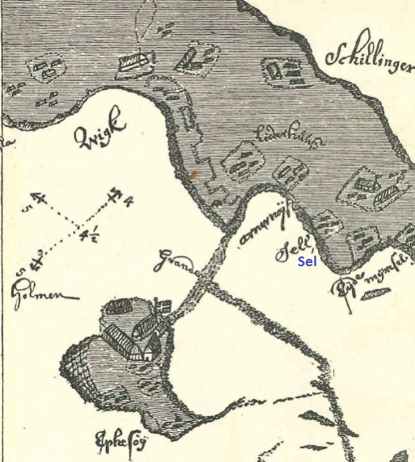
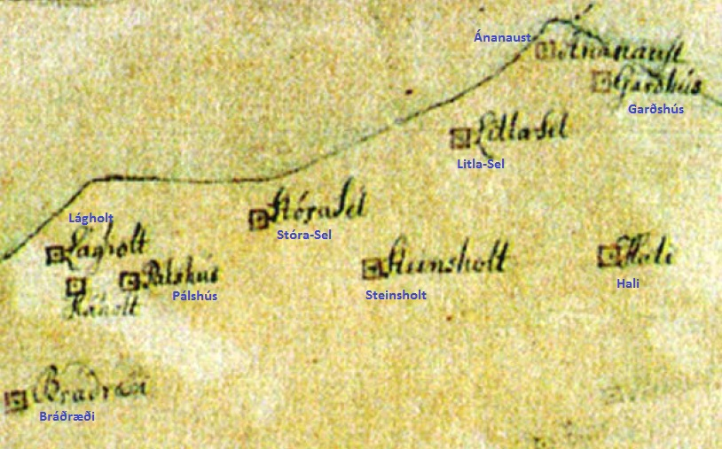
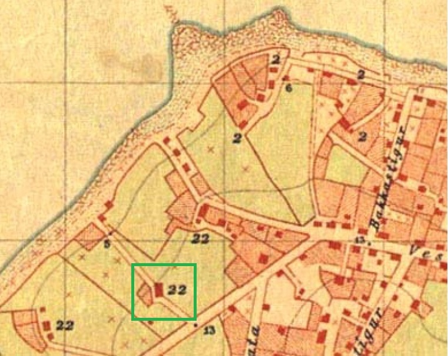
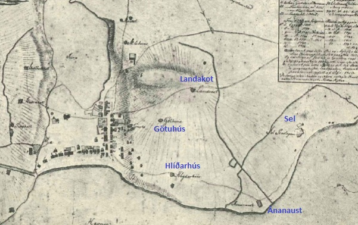
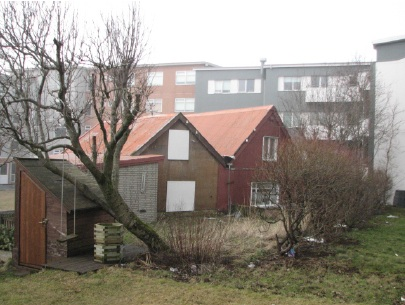

Kort og uppdráttur

Heimildir eru um Sel frá 14. öld og var það lengst af kirkjujörð auk þess sem útræði var mikið úr Selsvör, enda upphaflega um sel frá Víkurbænum að ræða. Bærinn var síðar oft nefndur Stóra-Sel. Steinbær var reistur þar árið 1884 sem stendur enn. Kort · 1703

Uppdráttur Hoffgards frá árinu 1715 sýnir m.a. Sel enda eitt af höfuðbýlum á þessu svæði og prestsetur. Nýlegar fornleifarannsóknir sýna að undir steinbænum eru leifar af torfbæ. Selsbærinn stóð þar sem í dag er Holtsgata 41b. Uppdráttur Hoffgards · 1715
Sel og nágrenni

Torfbæir í nágrenni Sels á seinni hluta 19. aldar. Á þeim tíma kallast bærinn Stóra-Sel til aðgreiningar frá Litla-Seli. Bæirnir í kring voru oft nefndir Selbæir enda Sel höfuðbólið frá fornu fari, þótt heimildir bendi til að lítil reisn hafi verið yfir Selsbænum á 19. öld. Sel og nágrenni · 19. öld

Úrdráttur úr svonefndum Herforingjakortum frá 1902 sýnir staðsetningu Sels (í græna rammanum). Stígurinn sem Sel stendur við er núverandi Holtsgata. Sjá má staðsetningu Litla-Sels norðar og Lágholt og Pálshús sunnar (merkt 22). Herforingjakort · 1902
Kort og bæjarstæðið í dag

Kort frá 1801 sem sýnir Sel og næstu bæi. Sjá má slóða frá Ánanaustum að Seli. Nánari upplýsingar um Sel og Selsbæina má finna á slóðinni: http://www.ferlir.is/?id=17625 Kort · 1801

Bæjarstæði Sels eða Stóra-Sels þar sem í dag er Holtsgata 41b. Bæjarstæðið · í dag